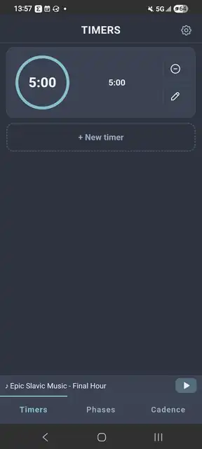
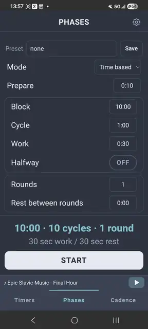

Count for me
صحة ورياضة
An opinionated interval timer built for workouts that do not fit neatly into standard work, rest, and round patterns. What it does Timers that announce and stop. A single cue when the timer reaches zero, like a sports watch, with no alarm to dismiss. Two interval modes that fit how you think. Build
✓ ترخيص مفتوح (GPL-3.0-or-later) · آخر تحديث: 2026-10-03
1.2.0الإصدار
2.2 MBالحجم
GPL-3.0-or-laterالرخصة
Open in Kanzتحميل APK (2.2 MB)
Download APK
SHA-256: 2ac288ac5a41396c81f88a215615ee1bce0b8275476ee01a1fccff808a66570f


امسح الكود لفتح صفحة التطبيق
Scan to open this app page
لو كنز مش متثبت عندك: نزّل متجر كنز.
Not installed? Get the Kanz store.